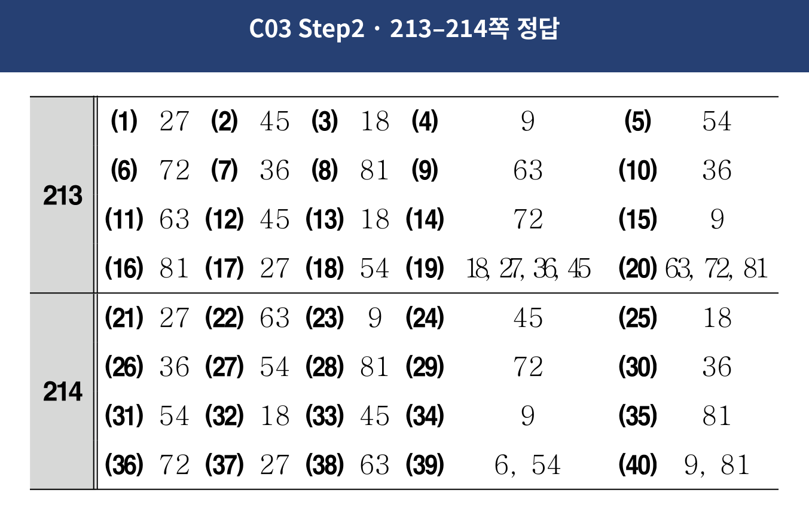

<!doctype html><html lang="ko"><meta charset="utf-8"><meta name="viewport" content="width=device-width,initial-scale=1"><title>C03 Step2 · 213–214쪽 정답</title><style>body{margin:0;background:#eef2f7;color:#264073;font-family:system-ui,sans-serif}main{max-width:1000px;margin:auto;padding:18px 10px}h1{font-size:1.25rem}img{display:block;width:100%;height:auto;background:white}p{font-size:.9rem}</style><main><h1>C03 Step2 · 213–214쪽 정답</h1><p>확대해서 확인할 수 있어요.</p><a href="213.png"></a></main></html>